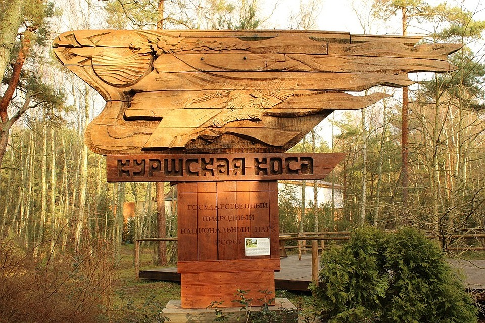
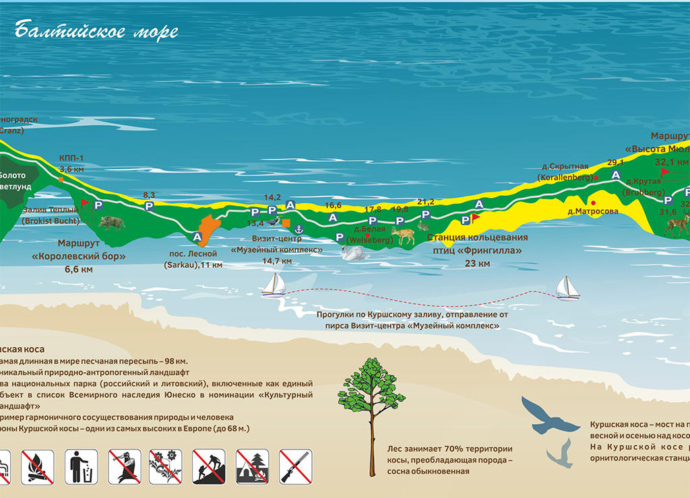
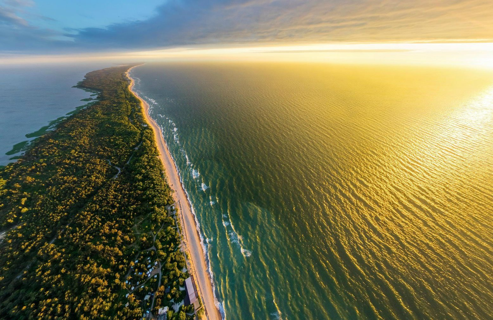
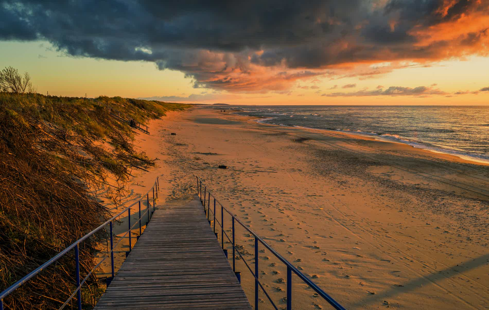
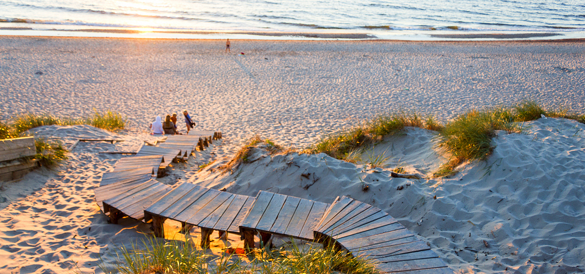
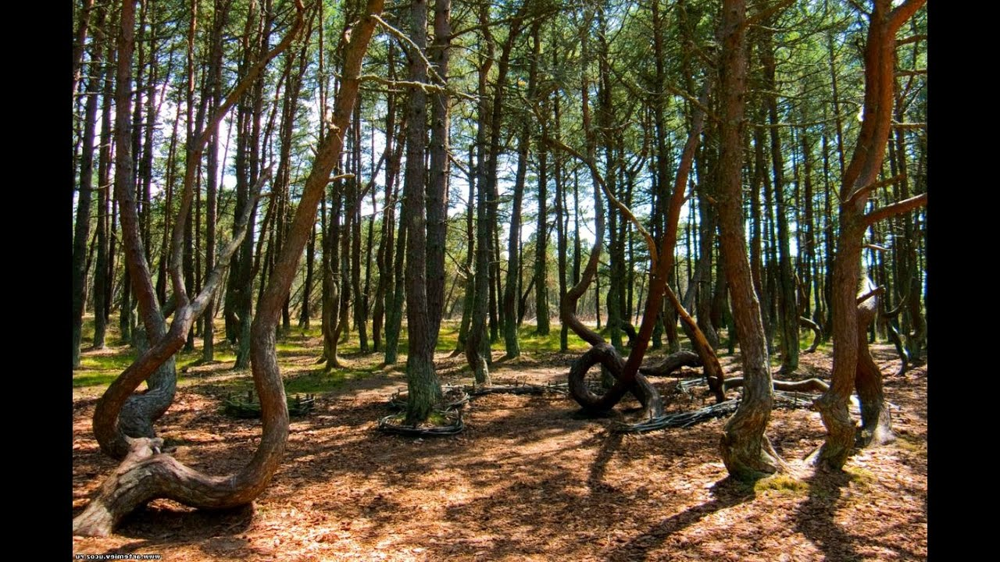
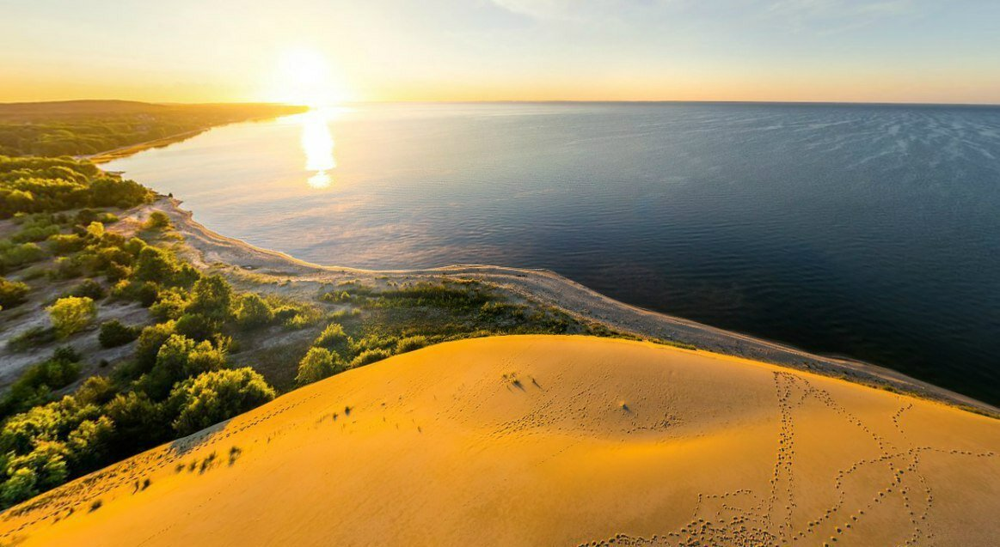
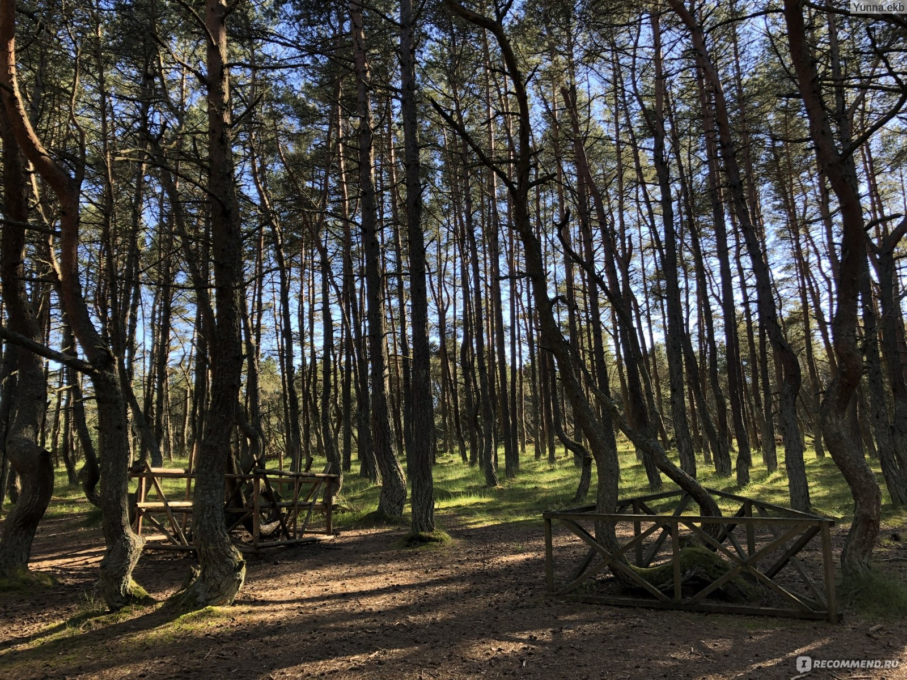

Описание путешествия
Погрузитесь в атмосферу природных красот Куршской косы — объекта Всемирного наследия ЮНЕСКО — и познакомьтесь с историей средневековых замков региона. Вас ждут завораживающие пейзажи, уникальные природные явления и вкус местной кухни.
Что вас ждёт:
- 🦢 Озеро Лебедь: живописное озеро с богатой фауной, где можно увидеть лебедей и других водоплавающих птиц.
- 🏔️ Высота Эфа: одна из самых высоких дюн на Куршской косе, с которой открывается панорамный вид на море и лес.
- 🌲 Танцующий лес: участок леса с причудливо изогнутыми стволами сосен, вызывающий множество гипотез о причинах такой формы деревьев.
- 👁️ Высота Мюллера: ещё одна обзорная точка с видом на косу и Балтийское море.
- 🍺 Дегустация местного пива и копчёной рыбы: возможность попробовать традиционные калининградские деликатесы.
- 🚶 Прогулка по Зеленоградску: очаровательному курортному городу с атмосферой европейского городка.
- 🏰 Замок Шаакен: средневековый замок Тевтонского ордена, где сегодня проводятся экскурсии и исторические реконструкции.
- 🏰 Замок Нессельбек: воссозданный средневековый замок с гостиницей и рестораном, стилизованным под эпоху рыцарей.
Время путешествия
от 6ч до 10ч
Фотографии маршрута








×